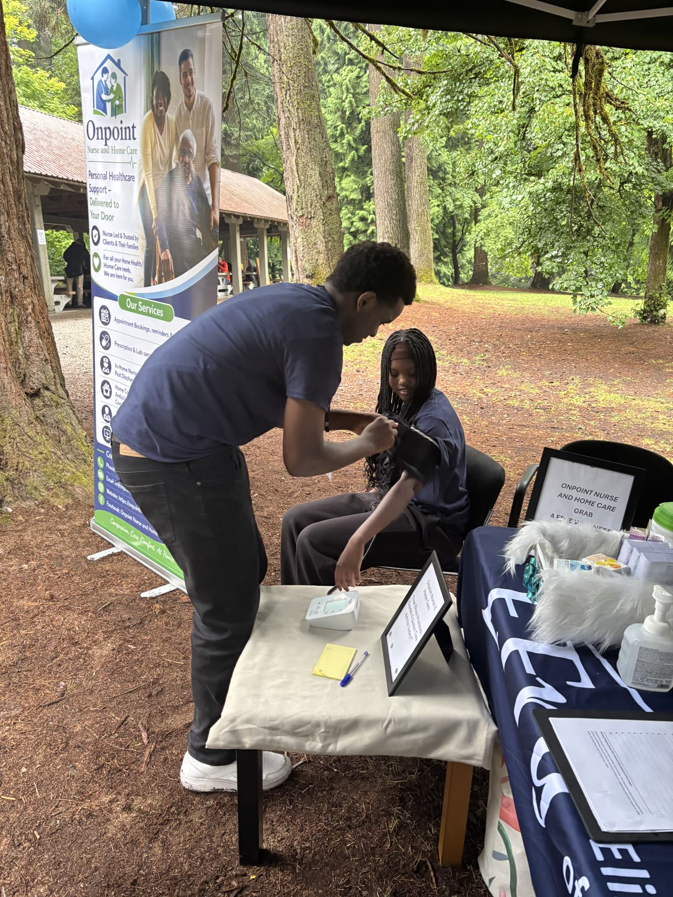

Predictable, Transparent, and Clinically Managed
Transferring a vulnerable patient from an acute hospital ward or clinic to home requires seamless communication between hospital clinicians, community nurses, caregivers, and family members. Any breakdown in communication risks medication errors, delayed equipment, or swift emergency department readmission.
OnPoint’s referral workflow eliminates ambiguity. Every referral is personally triaged by our Lead Registered Nurse, who maintains end-to-end clinical accountability from the initial hospital bedside consultation through long-term recovery monitoring.
"Our 4-stage referral pathway ensures that when you discharge a patient to OnPoint, they arrive to a fully prepared home, a reconciled medication schedule, and a dedicated clinical nursing safety net."

The 4-Stage Referral Pathway
How we guide referred patients from hospital bedside to stable recovery at home.
Secure Intake & Clinical Triage (< 2 Hours)
Upon receipt of an electronic, faxed, or telephone referral, our Clinical Care Desk reviews medical acuity, diagnoses, discharge goals, and timeline parameters.
- Immediate confirmation sent to referring clinician or unit coordinator
- Direct contact initiated with the patient's family to confirm care availability
- Preliminary nursing skill and shift requirement assessment
Bedside or In-Home RN Assessment
Our Lead Registered Nurse conducts a comprehensive clinical evaluation at the hospital bedside (VGH, St. Paul's, Richmond, Burnaby, Surrey Memorial) or patient's residence.
- Physical mobility, skin integrity, and cognitive baseline evaluation
- Discharge medication reconciliation and order translation
- Identification of required DME (hospital bed, lifts, commode, ramps)
Care Plan Formulation & Home Readiness
We build an individualized care protocol, deliver required medical equipment to the home, and assign a dedicated primary caregiver team.
- Tailored shift schedules (hourly, 12-hour, overnight, or 24/7)
- Caregiver chemistry and clinical skill matching
- Home environmental safety and fall hazard clearing
Care Launch & Closed-Loop Reporting
Care begins with doorstep reception. We initiate continuous clinical tracking and maintain direct progress reporting back to the primary care physician.
- First 48-hour intensive stabilization and vital sign surveillance
- Electronic nursing progress summaries transmitted to physician clinics
- Scheduled 30/60/90-day reassessments with family and clinicians
What Each Healthcare Stakeholder Receives
Clear communication tailored to the needs of every team member.
Referring Physicians
Initial clinical intake summary, routine vital sign / wound healing progress charts, medication compliance reports, and immediate physician escalation for clinical anomalies.
Discharge Planners
Instant discharge acceptance confirmation, guaranteed doorstep arrival times, home equipment installation confirmation, and post-discharge safety verification.
Families & Caregivers
Dedicated clinical care coordinator, digital family portal with daily shift notes, 24/7 on-call nursing supervisor access, and total pricing transparency.
Structured Clinical Communication Milestones
Predictable reporting checkpoints that keep the entire care team synchronized:
Day 1: Arrival & Intake Report
Confirmation of doorstep reception, initial vital baseline verification, home safety audit summary, and pharmacy blister-pack confirmation transmitted within 12 hours.
Day 7: Stabilization Review
Summary of first-week recovery progress, wound healing status, mobility milestones, medication compliance, and caregiver chemistry feedback.
Day 30: Formal Reassessment
Comprehensive RN re-evaluation comparing admission metrics against current functional status, with recommendations for scaling down or maintaining care.
Immediate Red-Flag Alerts
Instant phone escalation to the primary care physician or specialist clinic if clinical warning signs emerge (sudden desaturation, acute edema, fever, or confusion).
Questions About the Referral Process
Care can start within 24 hours for standard cases, and same-day (within 2 to 4 hours) for urgent hospital discharges or acute family emergencies across Metro Vancouver.
Having patient demographics, primary diagnosis, hospital discharge summary or physician directives, current medication profile, and family contact details ensures immediate triage.
We provide formal nursing admission summaries, bi-weekly progress notes, and instant alerts should there be significant changes in vital signs, wound healing, or functional status.
Our Lead RN works with local medical supply providers and occupational therapists to arrange hospital beds, pressure-relief mattresses, transfer poles, commodes, and oxygen concentrators prior to the patient arriving home.
Both. While physicians and hospital coordinators frequently refer patients, families can also self-refer directly by booking a free in-home assessment.
We offer flexible scheduling including 2-hour clinical procedure visits, 8-to-12-hour daytime or overnight shifts, and continuous 24/7 care.
We work in close synchronization with regional Palliative Care Consultation Teams and local hospices, providing skilled symptom control, continuous subcutaneous infusions, pain management, and compassionate family support.
Yes. Treatment plans are dynamic; physicians can update directives (such as antibiotic taper dates or dressing frequencies) via phone or fax at any time.
Start a Patient Referral Today
Use our fast-track online referral form or contact our clinical triage desk directly.